Limpieza Dental
Profilaxis profesional para eliminar placa y sarro, previniendo caries y enfermedades de encías.
Ver servicioBienvenido a Alta Dental Especialidades
En Alta Dental Especialidades combinamos tecnología moderna y un trato humano cercano para ofrecerte tratamientos dentales seguros, cómodos y pensados para toda la familia.
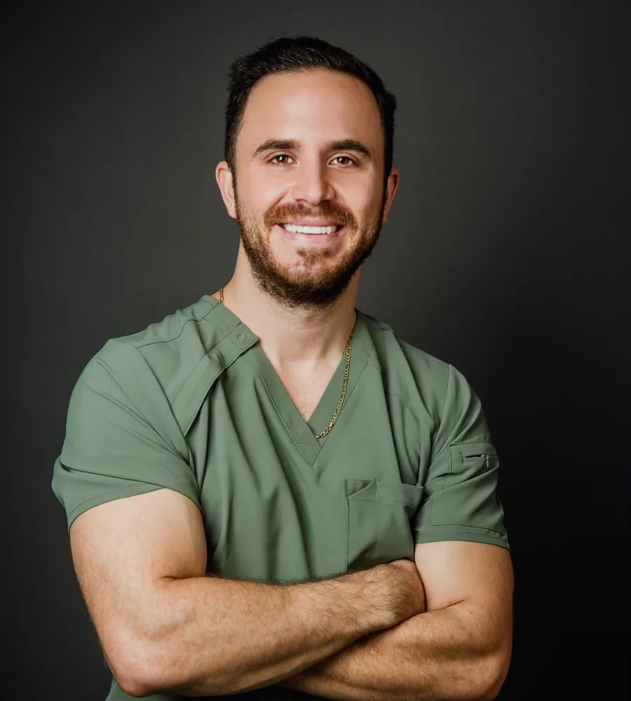
Nuestros Servicios
Contamos con tratamientos integrales respaldados por especialistas certificados y equipo de última generación.
Profilaxis profesional para eliminar placa y sarro, previniendo caries y enfermedades de encías.
Ver servicioAclara el tono de tus dientes con tecnología Philips Zoom, segura y de resultados visibles.
Ver servicioAlineación dental para mejorar tu mordida y la estética de tu sonrisa.
Ver servicioSeguimiento y corrección temprana de la mordida y el crecimiento dental en niños.
Ver servicioTratamiento de conducto para salvar piezas dañadas y aliviar el dolor de origen dental.
Ver servicioDiagnóstico y tratamiento de encías para mantener la salud de los tejidos que sostienen tus dientes.
Ver servicioReemplazo de piezas perdidas con prótesis removibles o fijas, personalizadas a tu boca.
Ver servicioSustitución de raíces dentales con implantes que devuelven función y estética a tu sonrisa.
Ver servicioRestauración que cubre y protege una pieza dañada, recuperando su forma y resistencia.
Ver servicioSolución fija para reemplazar una o más piezas ausentes apoyándose en dientes vecinos.
Ver servicioProcedimientos quirúrgicos especializados para tratar afecciones de dientes, mandíbula y tejidos orales.
Ver servicio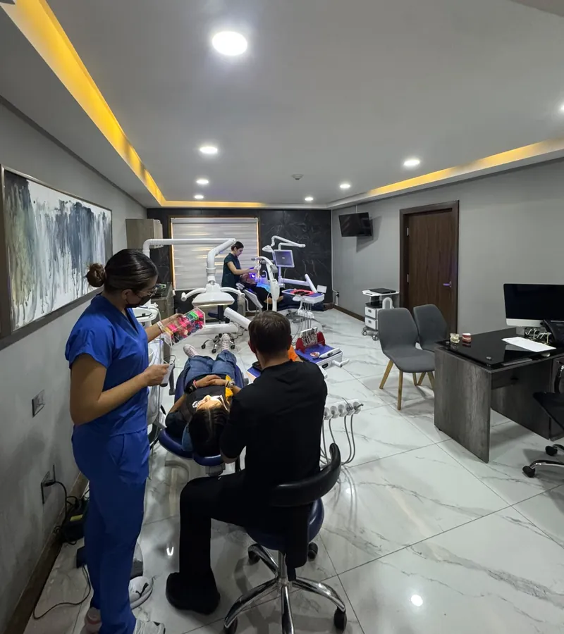
Sobre Nosotros
Alta Dental Especialidades nace con el propósito de ofrecer atención dental moderna y humana en Chihuahua. El Dr. José Eduardo Ramos combina experiencia clínica con tecnología de vanguardia, como el sistema de blanqueamiento Philips Zoom, para cuidar tu sonrisa en cada etapa de tu vida.
Creemos que una visita al dentista puede ser una experiencia tranquila: por eso invertimos en instalaciones cómodas y planes de tratamiento claros y personalizados para cada paciente.
Galería
Un vistazo a los espacios y momentos de Alta Dental Especialidades.
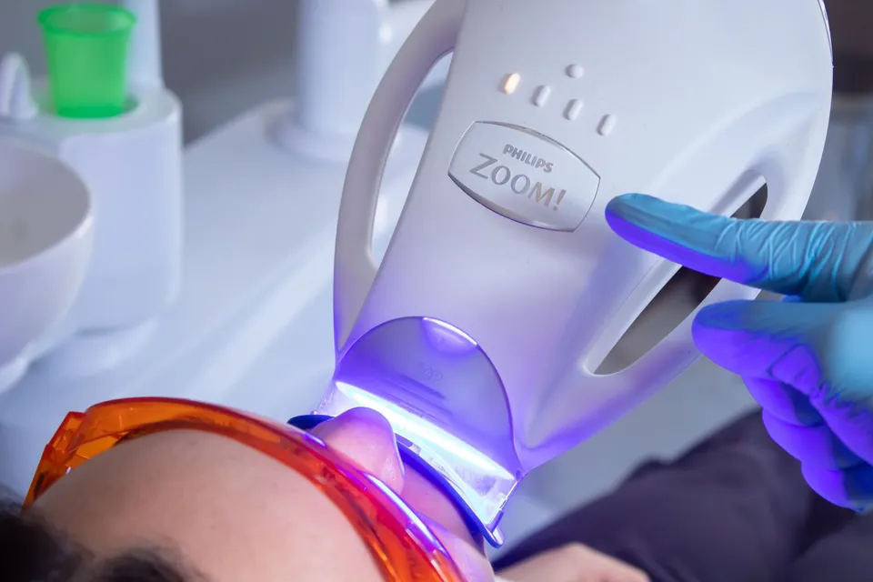
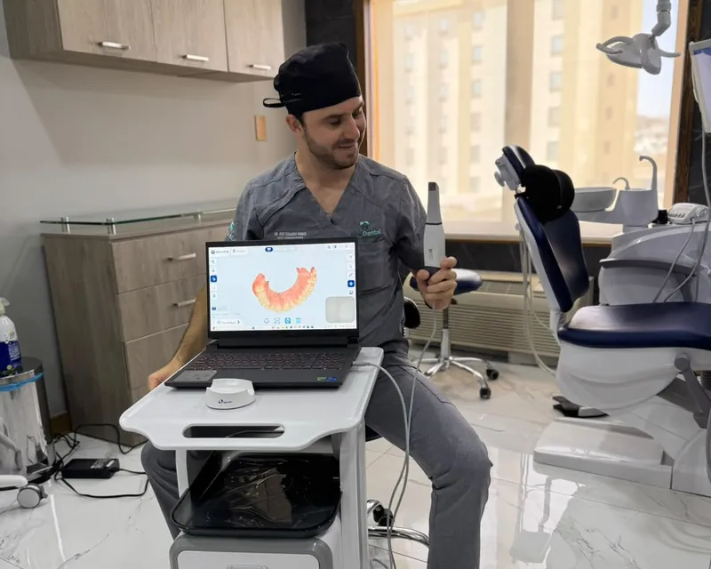
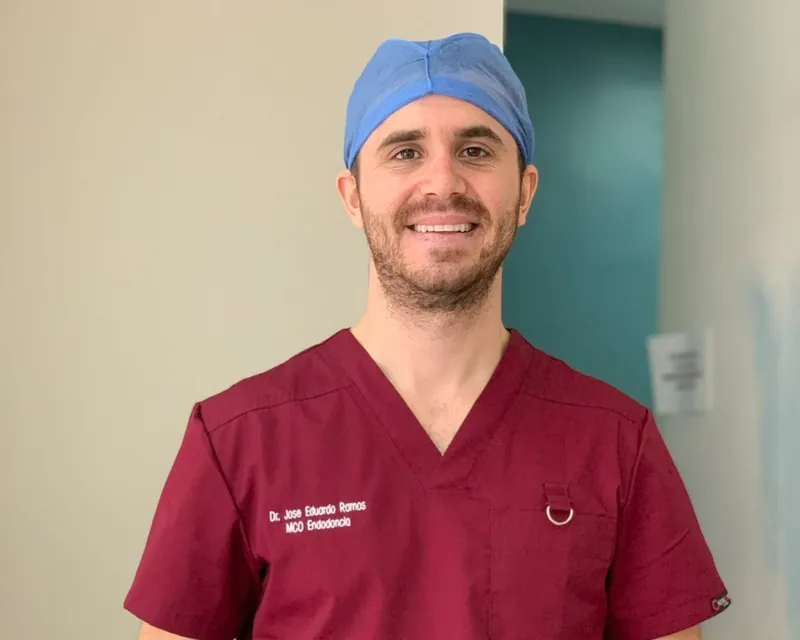
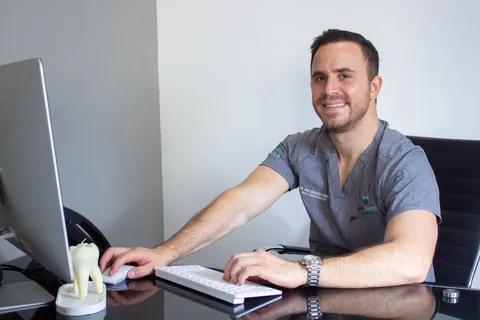
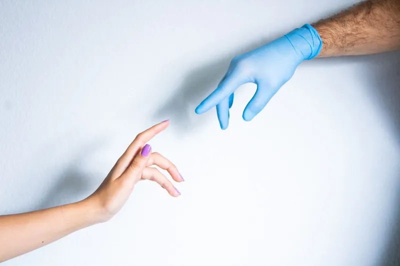
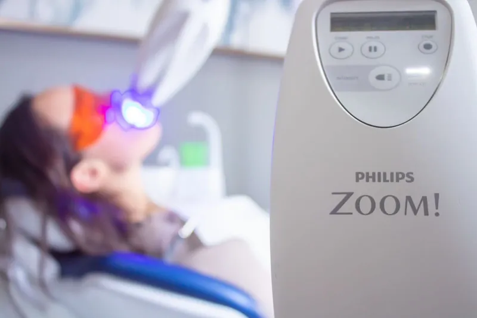
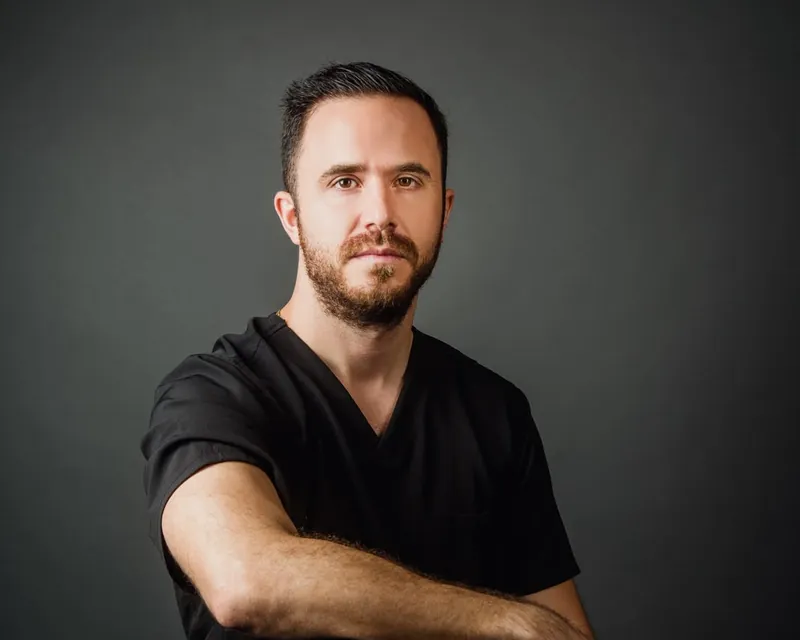
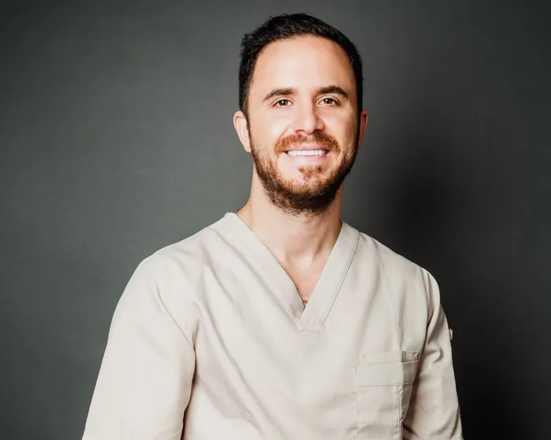
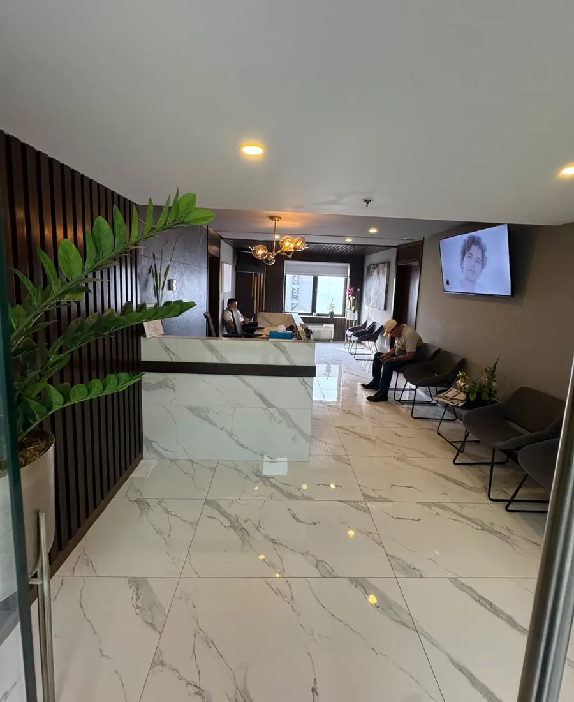
Reserva en Línea
Completa el formulario y te enviaremos directo a WhatsApp con tus datos listos para confirmar tu cita.
Testimonios
Historias reales de pacientes que confiaron en Alta Dental Especialidades para el cuidado de su sonrisa.
Nuestros Planes
Cada tratamiento se valora de forma personalizada según tu caso clínico.
Los tratamientos dentales varían según el diagnóstico de cada paciente, por lo que no publicamos tarifas genéricas. Escríbenos por WhatsApp y con gusto te compartimos información y costos para tu caso.
Preguntas Frecuentes
Si tienes otra pregunta, contáctanos y con gusto te ayudaremos.
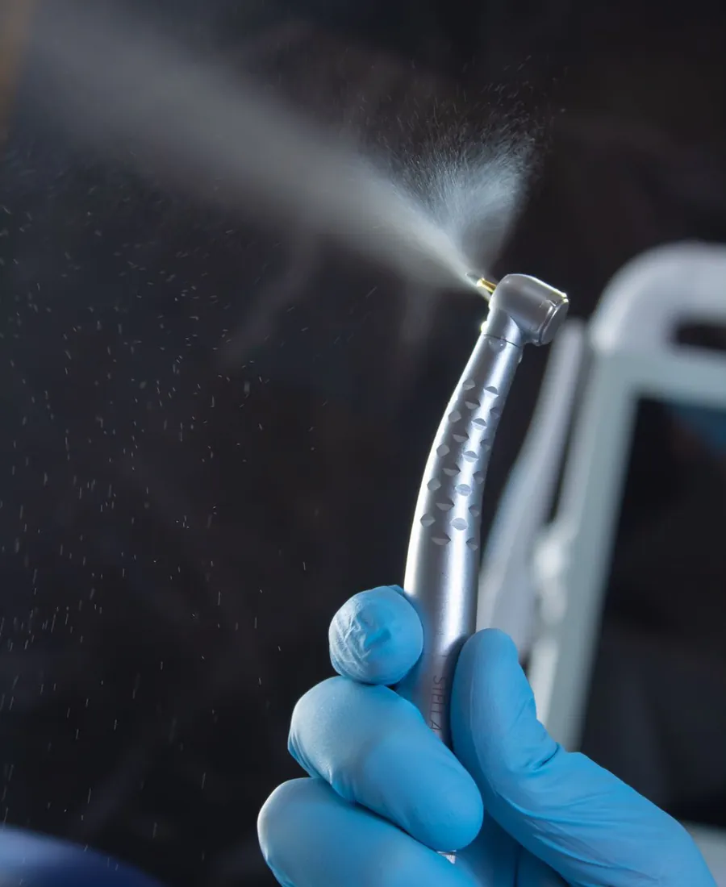
Nuestro Equipo
Atención dental cercana y profesional a cargo de especialistas comprometidos con tu sonrisa.
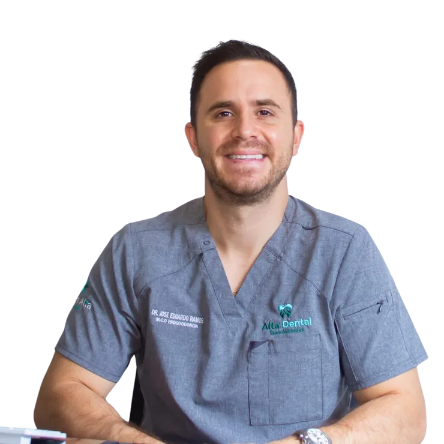
Agenda tu cita hoy mismo o llámanos al (614) 689 3737 Ext. 1411. Estamos para ayudarte.